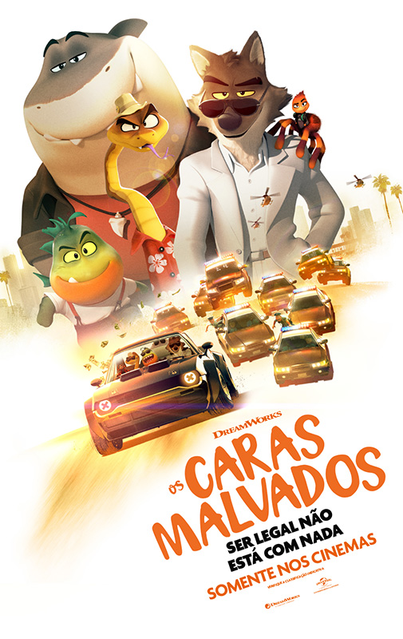

Depois de uma vida inteira de assaltos lendários, os notórios criminosos Sr. Lobo, Sr. Cobra, Sr. Piranha, Sr. Tubarão e Srta. Tarântula são finalmente capturados. Para evitar uma sentença de prisão, os bandidos animais devem realizar seu golpe mais desafiador até agora - tornando-se cidadãos-modelo. Sob a tutela de seu mentor, Professor Marmelada, a duvidosa gangue se propõe a enganar o mundo e mostrar que está se tornando boa.
O filme foi lançado em 17/03/2022 aqui no Brasil. Ele é produzido pela DreamWorks
